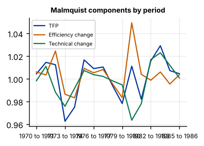

Run this model on your own data in Open Econometric Systems →
Step 1The question and the model
Did productivity grow, and was it because laggards caught up with the best or because the best got better? With distance functions \(D^t(x,y)\) measured against the DEA frontier of period \(t\), the input-oriented Malmquist index between periods \(t\) and \(t+1\) is
A value above 1 is an improvement. Efficiency change measures movement toward the frontier; technical change measures the shift of the frontier at the unit's own input and output mix. The frontiers here are constant-returns DEA frontiers for each period, as in the standard application.
How to write it: the model
We compute the input-oriented Malmquist productivity index for the 48 states in each pair of adjacent years from 1970 to 1986, from constant-returns DEA frontiers with gross state product as the output and private capital and employment as inputs. We report the geometric mean over states of total factor productivity change and its two components for each period and over the whole sample, list the fastest and slowest states, and check the results against orientation and input choices and against simulations with known answers.
Step 2Load the data
import numpy as np
import pandas as pd
import oes_engine as oes # pip install -e open-econometric-systems/oes-engine
d = pd.read_csv("produc.csv")
print(len(d), "state-years:", d.state.nunique(), "states,", d.year.min(), "to", d.year.max())
g = d.groupby("year")[["gsp", "pc", "emp"]].sum()
print((g.loc[[1970, 1980, 1986]] / g.loc[1970]).round(3))
print("aggregate output per worker, 1970 and 1986:", (g.gsp / g.emp).loc[[1970, 1986]].round(2).tolist())816 state-years: 48 states, 1970 to 1986
gsp pc emp
year
1970 1.000 1.000 1.000
1980 1.303 1.425 1.286
1986 1.544 1.646 1.411
aggregate output per worker, 1970 and 1986: [33.65, 36.81]How to read it
The panel is balanced: 816 state-years, 48 states from 1970 to 1986. Between 1970 and 1986 total output rose by 54%, private capital by 65% and employment by 41%, so output per worker rose from 33.65 to 36.81 (9%). Inputs grew nearly as fast as output; whether productivity grew depends on how the inputs are weighted, which is what the frontier does.
Step 3Compute the index
spec = dict(inputs=["pc", "emp"], outputs=["gsp"], id="state", time="year")
r = oes.run("malmquist", d.to_csv(index=False), spec)
oes.summary(r)
oes.show(r, "Cumulative change")
oes.plot(r)Units: 48
Periods: 17
Mean TFP change: 1.0016
Mean efficiency change: 1.0038
Mean technical change: 0.9978
Cumulative change over the whole sample
Geometric mean per period Cumulative
Component
TFP 1.0016 1.0257
Efficiency change 1.0038 1.0633
Technical change 0.9978 0.9647
Note: 16 adjacent period pairs, 48 units.
How to read it
Total factor productivity grew by 0.16% a period on average (geometric mean of 1.0016 over 16 year-pairs) and by 2.6% in all (1.0257). The components pull in opposite directions: efficiency change is +6.3% cumulative (1.0633; the states moved closer to the frontier) and technical change is -3.5% (0.9647; the frontier moved inward). The index is the product of the two, up to rounding. Technical change below 1 means that the best states at the end of the sample produced less from the same inputs than the best states at the start. The chart shows the three series by period.
Step 4By period and by state
oes.show(r, "Malmquist productivity index by period")
oes.show(r, "Units with the fastest")Malmquist productivity index by period (geometric mean over units)
TFP change Efficiency change (catch-up) Technical change (frontier shift) Share of units with growth
Period
1970 to 1971 1.0044 1.0061 0.9983 0.5833
1971 to 1972 1.0145 1.0034 1.0111 0.8750
1972 to 1973 1.0125 1.0245 0.9882 0.7500
1973 to 1974 0.9627 0.9865 0.9759 0.0833
1974 to 1975 0.9751 0.9833 0.9917 0.1042
1975 to 1976 1.0167 1.0093 1.0074 0.6042
1976 to 1977 1.0091 1.0054 1.0037 0.8125
1977 to 1978 1.0104 1.0083 1.0022 0.7500
1978 to 1979 0.9938 0.9956 0.9983 0.3333
1979 to 1980 0.9783 0.9835 0.9947 0.1250
1980 to 1981 1.0112 1.0494 0.9636 0.7292
1981 to 1982 0.9821 1.0040 0.9782 0.1250
1982 to 1983 1.0158 0.9988 1.0170 0.7917
1983 to 1984 1.0292 1.0061 1.0230 0.9583
1984 to 1985 1.0073 0.9955 1.0119 0.7500
1985 to 1986 1.0045 1.0037 1.0009 0.6875
Note: Values above 1 mean improvement. TFP change = efficiency change x technical change (Fare et al. 1994); constant-returns frontiers per period.
Units with the fastest and slowest TFP growth
TFP change Efficiency change Technical change
Unit
NEW_HAMPSHIRE 1.0140 1.0154 0.9986
TENNESSE 1.0125 1.0117 1.0008
MAINE 1.0098 1.0086 1.0012
ARKANSAS 1.0097 1.0111 0.9986
GEORGIA 1.0095 1.0078 1.0017
RHODE_ISLAND 0.9941 1.0000 0.9941
OKLAHOMA 0.9937 0.9986 0.9951
MASSACHUSETTS 0.9932 0.9994 0.9938
LOUISIANA 0.9837 0.9954 0.9883
WYOMING 0.9820 1.0000 0.9820
Note: Geometric mean per period.How to read it
Productivity change is cyclical. The index is below 1 in 1973 to 1974 (0.963), 1974 to 1975 (0.975), 1979 to 1980 (0.978) and 1981 to 1982 (0.982): the oil-shock and recession years, in which only 8%, 10%, 12.5% and 12.5% of states improved, and in which total output fell. It is highest in 1983 to 1984 (1.029), when 96% of states improved. Catch-up dominates in 1972 to 1973 (efficiency 1.025) and 1980 to 1981 (1.049), while the frontier shifts in 1983 to 1984 (technical change 1.023). By state, the fastest are New Hampshire (1.0140 a period), Tennessee (1.0125) and Maine (1.0098); the slowest are Wyoming (0.9820), Louisiana (0.9837) and Massachusetts (0.9932). Wyoming's average efficiency change is exactly 1, so its productivity change is almost all the movement of the frontier. Wyoming and Louisiana are the two states with the highest output per worker in 1986; a decline of the leaders is the technical regress.
Step 5Robustness: orientation and inputs
ro = oes.run("malmquist", d.to_csv(index=False), dict(spec, orientation="output"))
print("output orientation: mean TFP / efficiency / technical change", [s["value"] for s in ro["summary"][2:5]])
print("input orientation: mean TFP / efficiency / technical change", [s["value"] for s in r["summary"][2:5]])
r3 = oes.run("malmquist", d.to_csv(index=False), dict(spec, inputs=["pc", "emp", "pcap", "util"]))
print("four inputs:", [s["value"] for s in r3["summary"][2:5]])
r1 = oes.run("malmquist", d[d.year >= 1976].to_csv(index=False), spec)
print("1976-86 only:", [s["value"] for s in r1["summary"][2:5]])output orientation: mean TFP / efficiency / technical change [1.0016, 1.0038, 0.9978] input orientation: mean TFP / efficiency / technical change [1.0016, 1.0038, 0.9978] four inputs: [1.0028, 1.0018, 1.001] 1976-86 only: [1.0041, 1.0049, 0.9992]
How to read it
Orientation. Input and output orientation give identical numbers: with constant-returns frontiers the two distance functions are reciprocals of each other. Inputs. Adding public capital and the utilities capital stock as inputs gives a mean TFP change of 1.0028 (efficiency 1.0018, technical change 1.0010): the sign of the technical change flips, because the frontier is now spanned by different states. Period. From 1976 to 1986 the numbers are 1.0041, 1.0049 and 0.9992. The decomposition is sensitive to the specification, and the technical change, which is determined by a few states on the frontier, is the less reliable part; the total change is more stable (between 1.0016 and 1.0041).
Step 6Diagnostics: known shifts and catch-up
rng = np.random.default_rng(0)
n = 40; x = rng.uniform(1, 3, n); y0 = x * rng.uniform(0.5, 0.95, n)
def panel(y1):
return pd.concat([pd.DataFrame(dict(id=range(n), t=1, x=x, y=y0)), pd.DataFrame(dict(id=range(n), t=2, x=x, y=y1))]).to_csv(index=False)
sp = dict(inputs=["x"], outputs=["y"], id="id", time="t")
a = oes.run("malmquist", panel(y0 * 1.2), sp)
print("technology improves 20% for every unit: TFP, efficiency, technical", [round(v, 4) for v in a["tables"][0]["rows"][0][1:4]])
best = (y0 / x).max()
b = oes.run("malmquist", panel(np.minimum(y0 * 1.15, best * x)), sp)
print("laggards improve 15%, frontier unchanged: TFP, efficiency, technical", [round(v, 4) for v in b["tables"][0]["rows"][0][1:4]])
c = oes.run("malmquist", panel(y0), sp)
print("nothing changes:", [round(v, 4) for v in c["tables"][0]["rows"][0][1:4]])technology improves 20% for every unit: TFP, efficiency, technical [1.2, 1.0, 1.2] laggards improve 15%, frontier unchanged: TFP, efficiency, technical [1.1243, 1.1243, 1.0] nothing changes: [1.0, 1.0, 1.0]
How to read it
We build a two-period panel of 40 units with a known answer. When every unit's output rises by 20% at the same inputs, the index is 1.200, efficiency change 1.000 and technical change 1.200: a pure shift of the technology. When the laggards improve by 15% but are capped at the existing frontier, which does not move, the index is 1.124 with efficiency change 1.124 and technical change 1.000: pure catch-up. When nothing changes, all three are 1.000. The test suite checks the identity index = efficiency change x technical change in every period of the real data.
Step 7Write the results
How to write it: results
We compute the Malmquist productivity index for the 48 contiguous U.S. states for 1970 to 1986 (816 state-years) from constant-returns DEA frontiers, with gross state product as the output and private capital and employment as inputs. Productivity grew by 0.16% a period on average and by 2.6% over the 16 year-to-year changes. States moved closer to the frontier (efficiency change +6.3% in all) but the frontier itself moved inward (technical change -3.5%). The index is below 1 in the recession and oil-shock years 1973 to 1975, 1979 to 1980 and 1981 to 1982, and highest in 1983 to 1984 (1.029). New Hampshire, Tennessee and Maine are the fastest states and Wyoming, Louisiana and Massachusetts the slowest. The mean index is stable across specifications (1.0016 to 1.0041), but its decomposition is not: with two more inputs technical change is 1.001. The index has no standard error, so differences of this size should be read as descriptions of this sample.
References. Caves, Christensen and Diewert (1982), Econometrica; Fare, Grosskopf, Norris and Zhang (1994), American Economic Review; Charnes, Cooper and Rhodes (1978), European Journal of Operational Research; Munnell (1990), New England Economic Review.